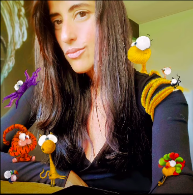

Alejandra Monterrubio
Ilustratorka, projektantka graficzna i meksykańska artystka.
Jej doświadczenia życiowe w Kanadzie, w społeczeństwie charakteryzującym się różnorodnością kulturową, były jednym ze źródeł inspiracji do powstania MONOCUCOS.
Jej artystyczne i wielokulturowe spojrzenie pomaga kształtować świat, w którym różnice, kolory i wyobraźnia stają się językiem przybliżającym dzieciom akceptację i życie w zgodzie z innymi.